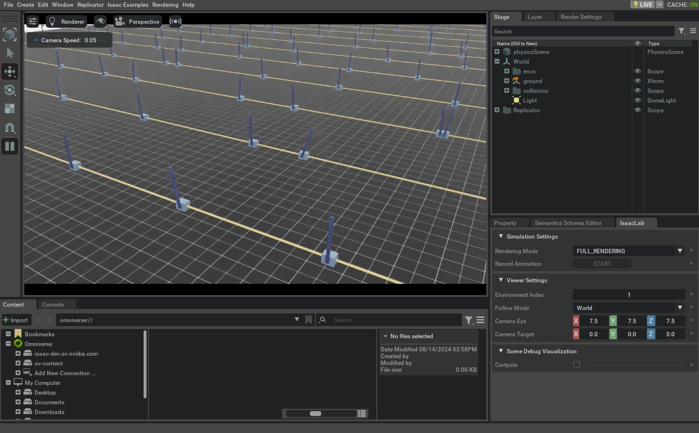

envs.ManagerBasedRLEnv 通过 Configuration Class 和 Manager 构建模块化 Environment；DirectRLEnv 则允许用户直接在 Environment Class 中实现核心逻辑，从而获得更细粒度的控制。
Direct Workflow 不使用 Manager 定义 Reward 和 Observation，而是在 Task 脚本中直接实现相关函数。这种方式更便于使用 PyTorch JIT 等功能，也让各项计算逻辑集中在同一个 Class 中。
本教程将通过 Direct Workflow 实现 Cartpole 平衡任务，依次介绍 Scene 创建、Action 应用、Reset、Reward 和 Observation 的实现方法。
1 代码
在本教程中，我们使用定义在 Cartpole Environment isaaclab_tasks.direct.cartpole Module。
代码 cartpole_env.py
# Copyright (c) 2022-2026, The Isaac Lab Project Developers (https://github.com/isaac-sim/IsaacLab/blob/main/CONTRIBUTORS.md).
# All rights reserved.
#
# SPDX-License-Identifier: BSD-3-Clause
from __future__ import annotations
import math
from collections.abc import Sequence
import torch
import isaaclab.sim as sim_utils
from isaaclab.assets import Articulation, ArticulationCfg
from isaaclab.envs import DirectRLEnv, DirectRLEnvCfg
from isaaclab.scene import InteractiveSceneCfg
from isaaclab.sim import SimulationCfg
from isaaclab.sim.spawners.from_files import GroundPlaneCfg, spawn_ground_plane
from isaaclab.utils import configclass
from isaaclab.utils.math import sample_uniform
from isaaclab_assets.robots.cartpole import CARTPOLE_CFG
@configclass
class CartpoleEnvCfg(DirectRLEnvCfg):
# env
decimation = 2
episode_length_s = 5.0
action_scale = 100.0 # [N]
action_space = 1
observation_space = 4
state_space = 0
# simulation
sim: SimulationCfg = SimulationCfg(dt=1 / 120, render_interval=decimation)
# robot
robot_cfg: ArticulationCfg = CARTPOLE_CFG.replace(prim_path="/World/envs/env_.*/Robot")
cart_dof_name = "slider_to_cart"
pole_dof_name = "cart_to_pole"
# scene
scene: InteractiveSceneCfg = InteractiveSceneCfg(
num_envs=4096, env_spacing=4.0, replicate_physics=True, clone_in_fabric=True
)
# reset
max_cart_pos = 3.0 # the cart is reset if it exceeds that position [m]
initial_pole_angle_range = [-0.25, 0.25] # the range in which the pole angle is sampled from on reset [rad]
# reward scales
rew_scale_alive = 1.0
rew_scale_terminated = -2.0
rew_scale_pole_pos = -1.0
rew_scale_cart_vel = -0.01
rew_scale_pole_vel = -0.005
class CartpoleEnv(DirectRLEnv):
cfg: CartpoleEnvCfg
def __init__(self, cfg: CartpoleEnvCfg, render_mode: str | None = None, **kwargs):
super().__init__(cfg, render_mode, **kwargs)
self._cart_dof_idx, _ = self.cartpole.find_joints(self.cfg.cart_dof_name)
self._pole_dof_idx, _ = self.cartpole.find_joints(self.cfg.pole_dof_name)
self.action_scale = self.cfg.action_scale
self.joint_pos = self.cartpole.data.joint_pos
self.joint_vel = self.cartpole.data.joint_vel
def _setup_scene(self):
self.cartpole = Articulation(self.cfg.robot_cfg)
# add ground plane
spawn_ground_plane(prim_path="/World/ground", cfg=GroundPlaneCfg())
# clone and replicate
self.scene.clone_environments(copy_from_source=False)
# we need to explicitly filter collisions for CPU simulation
if self.device == "cpu":
self.scene.filter_collisions(global_prim_paths=[])
# add articulation to scene
self.scene.articulations["cartpole"] = self.cartpole
# add lights
light_cfg = sim_utils.DomeLightCfg(intensity=2000.0, color=(0.75, 0.75, 0.75))
light_cfg.func("/World/Light", light_cfg)
def _pre_physics_step(self, actions: torch.Tensor) -> None:
self.actions = self.action_scale * actions.clone()
def _apply_action(self) -> None:
self.cartpole.set_joint_effort_target(self.actions, joint_ids=self._cart_dof_idx)
def _get_observations(self) -> dict:
obs = torch.cat(
(
self.joint_pos[:, self._pole_dof_idx[0]].unsqueeze(dim=1),
self.joint_vel[:, self._pole_dof_idx[0]].unsqueeze(dim=1),
self.joint_pos[:, self._cart_dof_idx[0]].unsqueeze(dim=1),
self.joint_vel[:, self._cart_dof_idx[0]].unsqueeze(dim=1),
),
dim=-1,
)
observations = {"policy": obs}
return observations
def _get_rewards(self) -> torch.Tensor:
total_reward = compute_rewards(
self.cfg.rew_scale_alive,
self.cfg.rew_scale_terminated,
self.cfg.rew_scale_pole_pos,
self.cfg.rew_scale_cart_vel,
self.cfg.rew_scale_pole_vel,
self.joint_pos[:, self._pole_dof_idx[0]],
self.joint_vel[:, self._pole_dof_idx[0]],
self.joint_pos[:, self._cart_dof_idx[0]],
self.joint_vel[:, self._cart_dof_idx[0]],
self.reset_terminated,
)
return total_reward
def _get_dones(self) -> tuple[torch.Tensor, torch.Tensor]:
self.joint_pos = self.cartpole.data.joint_pos
self.joint_vel = self.cartpole.data.joint_vel
time_out = self.episode_length_buf >= self.max_episode_length - 1
out_of_bounds = torch.any(torch.abs(self.joint_pos[:, self._cart_dof_idx]) > self.cfg.max_cart_pos, dim=1)
out_of_bounds = out_of_bounds | torch.any(torch.abs(self.joint_pos[:, self._pole_dof_idx]) > math.pi / 2, dim=1)
return out_of_bounds, time_out
def _reset_idx(self, env_ids: Sequence[int] | None):
if env_ids is None:
env_ids = self.cartpole._ALL_INDICES
super()._reset_idx(env_ids)
joint_pos = self.cartpole.data.default_joint_pos[env_ids]
joint_pos[:, self._pole_dof_idx] += sample_uniform(
self.cfg.initial_pole_angle_range[0] * math.pi,
self.cfg.initial_pole_angle_range[1] * math.pi,
joint_pos[:, self._pole_dof_idx].shape,
joint_pos.device,
)
joint_vel = self.cartpole.data.default_joint_vel[env_ids]
default_root_state = self.cartpole.data.default_root_state[env_ids]
default_root_state[:, :3] += self.scene.env_origins[env_ids]
self.joint_pos[env_ids] = joint_pos
self.joint_vel[env_ids] = joint_vel
self.cartpole.write_root_pose_to_sim(default_root_state[:, :7], env_ids)
self.cartpole.write_root_velocity_to_sim(default_root_state[:, 7:], env_ids)
self.cartpole.write_joint_state_to_sim(joint_pos, joint_vel, None, env_ids)
@torch.jit.script
def compute_rewards(
rew_scale_alive: float,
rew_scale_terminated: float,
rew_scale_pole_pos: float,
rew_scale_cart_vel: float,
rew_scale_pole_vel: float,
pole_pos: torch.Tensor,
pole_vel: torch.Tensor,
cart_pos: torch.Tensor,
cart_vel: torch.Tensor,
reset_terminated: torch.Tensor,
):
rew_alive = rew_scale_alive * (1.0 - reset_terminated.float())
rew_termination = rew_scale_terminated * reset_terminated.float()
rew_pole_pos = rew_scale_pole_pos * torch.sum(torch.square(pole_pos).unsqueeze(dim=1), dim=-1)
rew_cart_vel = rew_scale_cart_vel * torch.sum(torch.abs(cart_vel).unsqueeze(dim=1), dim=-1)
rew_pole_vel = rew_scale_pole_vel * torch.sum(torch.abs(pole_vel).unsqueeze(dim=1), dim=-1)
total_reward = rew_alive + rew_termination + rew_pole_pos + rew_cart_vel + rew_pole_vel
return total_reward
2 代码解析
与 Manager-Based Environment 相同，Direct Workflow 也使用 Configuration Class 保存 Simulation、Scene、Actor 和 Task 设置，其基类是 envs.DirectRLEnvCfg。由于 Direct Workflow 不使用 Action Manager 和 Observation Manager，Task Configuration 需要直接声明 Action 和 Observation 的维度。
@configclass
class CartpoleEnvCfg(DirectRLEnvCfg):
...
action_space = 1
observation_space = 4
state_space = 0
Configuration Class 还可以保存 Reward 缩放系数、Reset 阈值等 Task 专属参数。
@configclass
class CartpoleEnvCfg(DirectRLEnvCfg):
...
# reset
max_cart_pos = 3.0
initial_pole_angle_range = [-0.25, 0.25]
# reward scales
rew_scale_alive = 1.0
rew_scale_terminated = -2.0
rew_scale_pole_pos = -1.0
rew_scale_cart_vel = -0.01
rew_scale_pole_vel = -0.005
创建 Environment 时，需要定义继承 envs.DirectRLEnv 的新 Class。
class CartpoleEnv(DirectRLEnv):
cfg: CartpoleEnvCfg
def __init__(self, cfg: CartpoleEnvCfg, render_mode: str | None = None, **kwargs):
super().__init__(cfg, render_mode, **kwargs)
该 Class 可以保存供各 Method 共用的成员变量，例如应用 Action、判断 Reset、计算 Reward 和构造 Observation 时所需的数据。
2.1 创建 Scene
Manager-Based Workflow 由 Framework 创建 Scene；Direct Workflow 则允许用户自行实现。_setup_scene(self) 中需要完成的工作包括：向 Stage 添加 Actor、克隆 Environment、过滤 Environment 之间的 Collision、将 Actor 注册到 Scene，以及添加 Ground Plane 和 Light 等其他 Prim。
def _setup_scene(self):
self.cartpole = Articulation(self.cfg.robot_cfg)
# add ground plane
spawn_ground_plane(prim_path="/World/ground", cfg=GroundPlaneCfg())
# clone and replicate
self.scene.clone_environments(copy_from_source=False)
# we need to explicitly filter collisions for CPU simulation
if self.device == "cpu":
self.scene.filter_collisions(global_prim_paths=[])
# add articulation to scene
self.scene.articulations["cartpole"] = self.cartpole
# add lights
light_cfg = sim_utils.DomeLightCfg(intensity=2000.0, color=(0.75, 0.75, 0.75))
light_cfg.func("/World/Light", light_cfg)
2.2 定义 Rewards
_get_rewards(self) API 负责计算并返回 Reward Buffer。Task 可以在其中自由实现 Reward 逻辑；本例使用 PyTorch JIT Function 计算各个 Reward 分量。
def _get_rewards(self) -> torch.Tensor:
total_reward = compute_rewards(
self.cfg.rew_scale_alive,
self.cfg.rew_scale_terminated,
self.cfg.rew_scale_pole_pos,
self.cfg.rew_scale_cart_vel,
self.cfg.rew_scale_pole_vel,
self.joint_pos[:, self._pole_dof_idx[0]],
self.joint_vel[:, self._pole_dof_idx[0]],
self.joint_pos[:, self._cart_dof_idx[0]],
self.joint_vel[:, self._cart_dof_idx[0]],
self.reset_terminated,
)
return total_reward
@torch.jit.script
def compute_rewards(
rew_scale_alive: float,
rew_scale_terminated: float,
rew_scale_pole_pos: float,
rew_scale_cart_vel: float,
rew_scale_pole_vel: float,
pole_pos: torch.Tensor,
pole_vel: torch.Tensor,
cart_pos: torch.Tensor,
cart_vel: torch.Tensor,
reset_terminated: torch.Tensor,
):
rew_alive = rew_scale_alive * (1.0 - reset_terminated.float())
rew_termination = rew_scale_terminated * reset_terminated.float()
rew_pole_pos = rew_scale_pole_pos * torch.sum(torch.square(pole_pos), dim=-1)
rew_cart_vel = rew_scale_cart_vel * torch.sum(torch.abs(cart_vel), dim=-1)
rew_pole_vel = rew_scale_pole_vel * torch.sum(torch.abs(pole_vel), dim=-1)
total_reward = rew_alive + rew_termination + rew_pole_pos + rew_cart_vel + rew_pole_vel
return total_reward
2.3 定义 Observations
_get_observations(self) 负责构造 Observation Buffer。它应返回字典，其中 policy 键对应完整的 Policy Observation；对于 Asymmetric Policy，还应提供 critic 键及对应的 State Buffer。
def _get_observations(self) -> dict:
obs = torch.cat(
(
self.joint_pos[:, self._pole_dof_idx[0]].unsqueeze(dim=1),
self.joint_vel[:, self._pole_dof_idx[0]].unsqueeze(dim=1),
self.joint_pos[:, self._cart_dof_idx[0]].unsqueeze(dim=1),
self.joint_vel[:, self._cart_dof_idx[0]].unsqueeze(dim=1),
),
dim=-1,
)
observations = {"policy": obs}
return observations
2.4 计算终止状态并执行 Reset
_get_dones(self) 负责填充 dones Buffer，判断哪些 Environment 应当 Reset，以及哪些 Environment 达到 Episode Length 上限。它以两个 Boolean Tensor 组成的 Tuple 返回结果。
def _get_dones(self) -> tuple[torch.Tensor, torch.Tensor]:
self.joint_pos = self.cartpole.data.joint_pos
self.joint_vel = self.cartpole.data.joint_vel
time_out = self.episode_length_buf >= self.max_episode_length - 1
out_of_bounds = torch.any(torch.abs(self.joint_pos[:, self._cart_dof_idx]) > self.cfg.max_cart_pos, dim=1)
out_of_bounds = out_of_bounds | torch.any(torch.abs(self.joint_pos[:, self._pole_dof_idx]) > math.pi / 2, dim=1)
return out_of_bounds, time_out
得到待重置的 Environment 索引后，_reset_idx(self, env_ids) 会对其执行 Reset，并把新的状态直接写入 Simulation。
def _reset_idx(self, env_ids: Sequence[int] | None):
if env_ids is None:
env_ids = self.cartpole._ALL_INDICES
super()._reset_idx(env_ids)
joint_pos = self.cartpole.data.default_joint_pos[env_ids]
joint_pos[:, self._pole_dof_idx] += sample_uniform(
self.cfg.initial_pole_angle_range[0] * math.pi,
self.cfg.initial_pole_angle_range[1] * math.pi,
joint_pos[:, self._pole_dof_idx].shape,
joint_pos.device,
)
joint_vel = self.cartpole.data.default_joint_vel[env_ids]
default_root_state = self.cartpole.data.default_root_state[env_ids]
default_root_state[:, :3] += self.scene.env_origins[env_ids]
self.joint_pos[env_ids] = joint_pos
self.joint_vel[env_ids] = joint_vel
self.cartpole.write_root_pose_to_sim(default_root_state[:, :7], env_ids)
self.cartpole.write_root_velocity_to_sim(default_root_state[:, 7:], env_ids)
self.cartpole.write_joint_state_to_sim(joint_pos, joint_vel, None, env_ids)
2.5 应用 Actions
Action 处理包含两个 API。_pre_physics_step(self, actions) 接收 Policy 输出的 Action，每个 RL Step 在所有 Physics Step 之前调用一次，可用于处理 Action Buffer 并将结果缓存为 Environment 成员变量。
def _pre_physics_step(self, actions: torch.Tensor) -> None:
self.actions = self.action_scale * actions.clone()
_apply_action(self) 在每个 RL Step 内按 decimation 次数调用，即每个 Physics Step 前调用一次，从而可以灵活决定每个 Physics Step 实际应用的 Action。
def _apply_action(self) -> None:
self.cartpole.set_joint_effort_target(self.actions, joint_ids=self._cart_dof_idx)
3 代码执行
要对 Direct Workflow Cartpole Environment 进行训练，我们可以使用以下 Command：
./isaaclab.sh -p scripts/reinforcement_learning/rl_games/train.py --task=Isaac-Cartpole-Direct-v0

所有 Direct Workflow Tasks 都有后缀 -Direct 添加到 Task 名称中以区分实现风格。
4 Domain Randomization
在 Direct Workflow 中，Domain Randomization Configuration 使用 configclass Module
指定 Configuration Class 组成 EventTermCfg 变量。
以下是 Domain Randomization 的 Configuration Class 示例：
@configclass
class EventCfg:
robot_physics_material = EventTerm(
func=mdp.randomize_rigid_body_material,
mode="reset",
params={
"asset_cfg": SceneEntityCfg("robot", body_names=".*"),
"static_friction_range": (0.7, 1.3),
"dynamic_friction_range": (1.0, 1.0),
"restitution_range": (1.0, 1.0),
"num_buckets": 250,
},
)
robot_joint_stiffness_and_damping = EventTerm(
func=mdp.randomize_actuator_gains,
mode="reset",
params={
"asset_cfg": SceneEntityCfg("robot", joint_names=".*"),
"stiffness_distribution_params": (0.75, 1.5),
"damping_distribution_params": (0.3, 3.0),
"operation": "scale",
"distribution": "log_uniform",
},
)
reset_gravity = EventTerm(
func=mdp.randomize_physics_scene_gravity,
mode="interval",
is_global_time=True,
interval_range_s=(36.0, 36.0), # time_s = num_steps * (decimation * dt)
params={
"gravity_distribution_params": ([0.0, 0.0, 0.0], [0.0, 0.0, 0.4]),
"operation": "add",
"distribution": "gaussian",
},
)
每个 EventTerm Object 属于 EventTermCfg Class 并接受 func Parameter
为了指定随机化过程中要调用的Function， mode Parameter，可以是 startup,
reset 或者 interval。该 params 字典应提供必要的 Arguments 给
中指定的Function func Parameter。
Function指定为 func 为 EventTerm 可以在 events Module。
请注意，作为 "asset_cfg": SceneEntityCfg("robot", body_names=".*") Parameter，名称
Actor "robot" 与指定为正则表达式的主体或关节名称一起提供，
这将是应用随机化的Actor和身体/关节。
一旦 configclass 对于已设置的随机化 Terms，必须添加 Class
到 Task 的基 Config Class 并分配给变量 events.
@configclass
class MyTaskConfig:
events: EventCfg = EventCfg()
4.1 Action 和 Observation Noise
Direct Workflow 也可以通过 configclass Module 配置 Action Noise 和 Observation Noise。相应配置需要赋给主 Task Configuration 的 action_noise_model 和 observation_noise_model：
@configclass
class MyTaskConfig:
# at every time-step add gaussian noise + bias. The bias is a gaussian sampled at reset
action_noise_model: NoiseModelWithAdditiveBiasCfg = NoiseModelWithAdditiveBiasCfg(
noise_cfg=GaussianNoiseCfg(mean=0.0, std=0.05, operation="add"),
bias_noise_cfg=GaussianNoiseCfg(mean=0.0, std=0.015, operation="abs"),
)
# at every time-step add gaussian noise + bias. The bias is a gaussian sampled at reset
observation_noise_model: NoiseModelWithAdditiveBiasCfg = NoiseModelWithAdditiveBiasCfg(
noise_cfg=GaussianNoiseCfg(mean=0.0, std=0.002, operation="add"),
bias_noise_cfg=GaussianNoiseCfg(mean=0.0, std=0.0001, operation="abs"),
)
NoiseModelWithAdditiveBiasCfg 可以同时生成每个 Step 独立采样的 Noise，以及在 Reset 时重新采样、并在整个 Episode 中保持相关性的 Bias Noise。
noise_cfg Term 定义每个 Step 为所有 Environment 采样的 Gaussian Distribution，采样结果会分别加入 Action Buffer 和 Observation Buffer。
bias_noise_cfg Term 定义在 Environment Reset 时采样的相关 Noise。该值在当前 Episode 的每个 Step 中保持不变，并在下一次 Reset 时重新采样。
如果只需要 Per-Step Noise，可以使用 GaussianNoiseCfg，定义叠加到输入 Buffer 上的 Additive Gaussian Distribution。
@configclass
class MyTaskConfig:
action_noise_model: GaussianNoiseCfg = GaussianNoiseCfg(mean=0.0, std=0.05, operation="add")
本教程通过扩展基础 Environment，实现了 Direct Workflow RL Task 所需的 Scene Setup、Action、Done、Reset、Reward 和 Observation Function。
可以手动实例化 DirectRLEnv，但为每个 Task 编写专用 Script 并不便于扩展。下一教程将使用 gymnasium.make()，通过 Gymnasium Interface 创建 Environment。